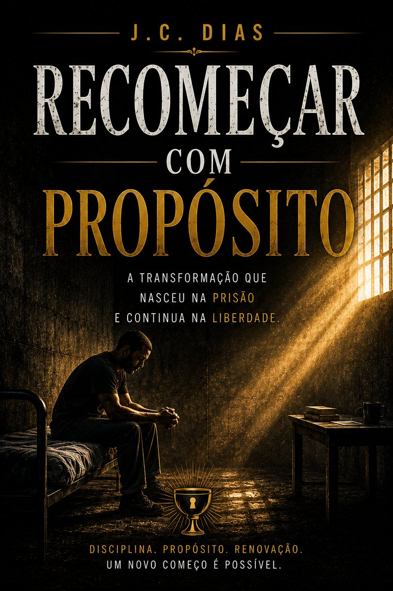

Uma história real
E foi dentro da prisão que eu precisei aprender a reconstruir uma vida que já não podia voltar a ser como antes.
Eu não escrevi Recomeçar com Propósito porque queria ensinar alguém a viver.
Escrevi porque, depois de perder a liberdade e ver minha vida desmoronar, eu precisava descobrir como continuar.
Eu não podia apagar o que tinha acontecido.
Não podia fugir das consequências.
Mas ainda podia decidir quem eu me tornaria depois daquilo.
Foi dessa decisão que este livro nasceu.
Talvez eu precise ler isso até o fim.

Ebook + audiobook, acesso imediato
R$27
Compra segura · Acesso imediato · 7 dias de garantia
Aprendi quando precisei fazer isso dentro de uma cela.
Fiquei onze meses e duas semanas preso. Escrevi quatro livros lá dentro. Este é um deles.
A prisão retirou minha liberdade, minha rotina e a imagem que eu tinha construído de mim mesmo.
Vieram vergonha.
Culpa.
Medo.
Silêncio.
E uma pergunta que eu não conseguia mais evitar:
“Se eu não posso mudar o que fiz, o que ainda posso mudar?”
A resposta começou a aparecer devagar: eu ainda podia mudar aquilo que faria com o resto da minha vida.
E se eu estiver fazendo a pergunta errada sobre o meu próprio passado?
Este livro nasceu durante uma das fases mais difíceis da minha vida.
É uma história sobre queda, culpa, identidade, perdão, disciplina e reconstrução.
Mas, acima de tudo, é sobre uma decisão: não permitir que o pior capítulo da sua história escreva sozinho todos os próximos.
Dentro do livro
Eu preciso descobrir como essa história termina.
Recomeçar com Propósito
R$27
Você não está comprando uma fórmula. Está entrando numa história real.
Quero recomeçar com propósitoCompra segura · Acesso imediato · 7 dias de garantia
Mas ainda podia decidir como escreveria o próximo.
Talvez você nunca tenha entrado em uma cela.
Mas talvez exista alguma parte da sua história que ainda mantenha você preso.
Recomeçar com Propósito nasceu no momento em que precisei descobrir que recomeçar não era voltar para a vida que eu tinha.
Era construir outra.
Qual parte da minha história ainda está decidindo por mim?
Ebook + audiobook, acesso imediato
R$27
Compra segura · Acesso imediato · 7 dias de garantia